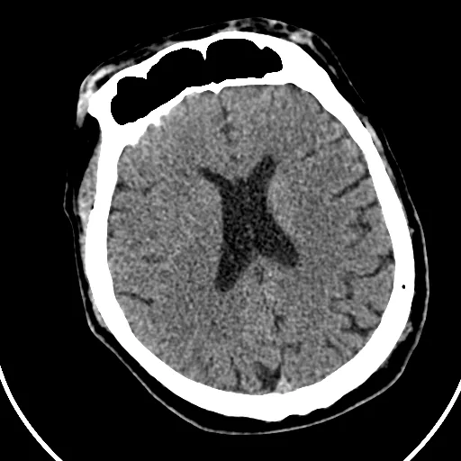
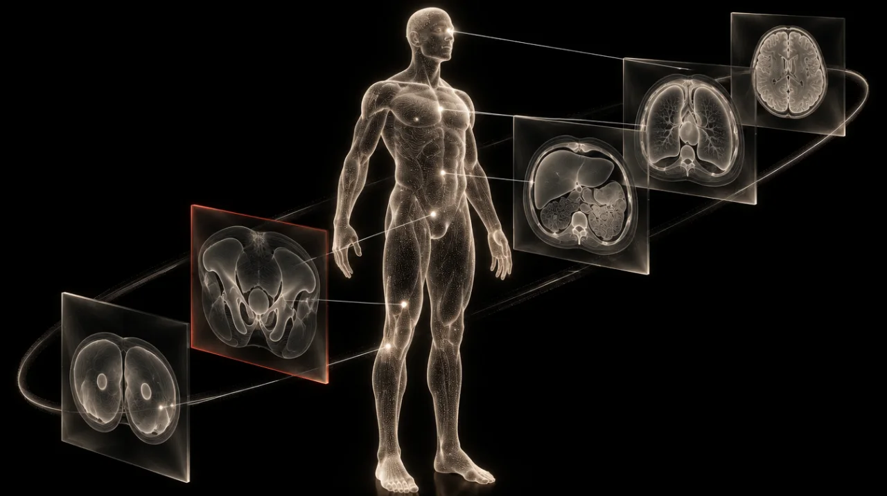

01
In your reading room
A voice and AI native platform that brings studies, priors and reports into your flow.
A voice and AI native platform for radiologists.
A research partner for what comes next.
Platform v0.1
Built with radiologists
Imaging, reimagined as a material
A voice and AI native platform that brings studies, priors and reports into your flow.
A research partnership that starts with your clinical idea and builds toward practice.
02 / Work
Navigate the study, compare a prior and shape the report without breaking your train of thought.

Preparing the study…
“Open the most
critical patient”
A reading flow, shaped around your intent.
One place for your study, your context and your next action.
Shape the workflow around the way you practise.
Source CT and expert masks: CPAISD, Umerenkov et al. (2024), CC BY 4.0. Source voxels and reference masks are aligned and resampled for display. The highlighted region is a published expert annotation, not a live Tattrex prediction. Priority and report actions are scripted. The comparison uses an explicitly derived illustrative prior; it does not show real interval change.
03 / Discover

The most useful ideas often begin with something a radiologist notices. We work with you to explore it, build it and bring it toward clinical practice.
Start with an observation from your practice. Together, define the clinical question, build a focused tool and test its value.
Develop imaging representations that can support tasks across modalities and anatomy. Each project has a defined data and validation scope.
Explore imaging signals that may reveal new information about disease and outcomes. Discovery starts with a testable clinical hypothesis.
Our research ambition
From a specific clinical question to models that learn across imaging data. Each collaboration begins with a defined intended use, dataset and validation plan.
Begin with your clinical observation. Define the value and the intended use together.
Develop and validate with radiologists involved throughout. Test what matters in practice.
Tattrex leads the path toward regulatory approval and productisation for the intended use.
The next chapter of imaging should be written with the people who read it.
The v0.1 demo brings voice commands, study navigation and reporting into one workspace. A demo is the best way to see the current scope and discuss your workflow.
Yes. Tattrex is being built with radiologists. Bring the routines, reporting preferences and clinical questions that matter in your practice.
No. Start with a clinical observation or a question about imaging. We work together to define the problem and a useful next step.
Our research ambition spans imaging modalities and the whole body. Individual collaborations have a defined clinical question, dataset and validation scope.
We work together on development and validation. Tattrex takes responsibility for the path toward regulatory approval and productisation. Requirements depend on the intended use and market.
Research and clinical deployment are separate stages. Availability, validation and regulatory status are assessed for each product and intended use.
See the current platform and talk through your reading workflow.
Request a demoBring a clinical question or a research direction to Tattrex Labs.
Bring an idea